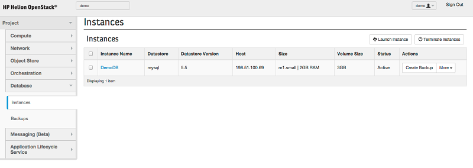
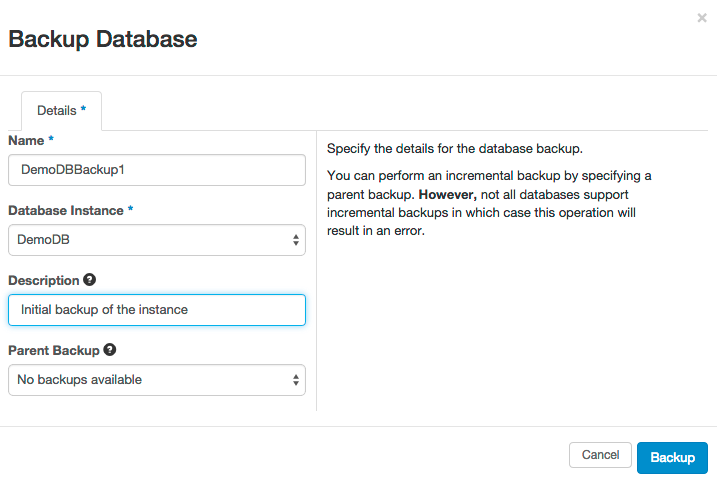
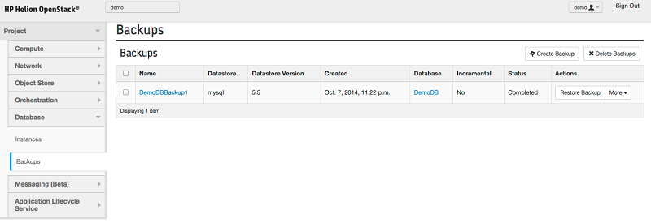

This document describes how to back up an existing database instance. This will take a backup of the entire database instance. If necessary, the backup can be restored to a new instance at a later time.
Note: Backing up a MongoDB database is not supported.
Backing up a database from Horizon
- Log in to the Horizon console.
- Under your project, open the Database panel and then click the Instances tab.
- A list of active database instances will be displayed. Identify the database instance to back up
and click Create Backup next to that
instance.

- In the Backup Database dialog, specify the following information:
-
Name - the name of the backup to create. This name will help you identify the backup in the future.
-
Database Instance - The database instance that will be backed up.
-
Description - a text description of the backup (optional).
-
Parent Backup - if a previous backup of this database instance exists. it is
possible to take an incremental backup. An incremental backup will process faster
because it only stores the differences between the two. Select the previous backup if
an incremental backup is desired.

- Click Backup.
- In the Database panel, click the Backups tab to view all existing backups,
including the newly-created
backup.

Backing up a database from the command line
- To work with backups from the command line, log in to the installer node for your HPE Helion OpenStack environment and source the service.osrc file:
. service.osrc
- Back up a database: To back up a database, use the trove backup-create command, passing in the database instance (by name or ID) to back up, and the name of the backup to be created.
-
- Example: Creating a backup by name
trove backup-create myRedisInstance myBackup
- Example: Creating a backup by ID
trove backup-create 0043b7e3-7376-44e6-8239-06156e03c5cd myBackup
- List created backups: To view the created backups, use the trove backup-list command
- Restore a database from a backup: To restore a backup (that is, create a new instance from a backup), use the trove create --backup <backup ID> command
Backing up a Vertica Preview database
Vertica backups can be performed by taking advantage of Vertica's export and import capabilities via the VSQL interface.
The Vertica documentation provides details on exporting data. Data can also be exported to an external file via SELECT
and imported via COPY LOCAL.
For more information on these procedures, see the following topics: